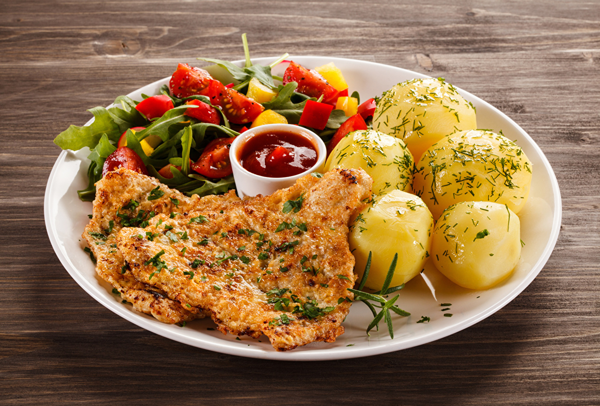
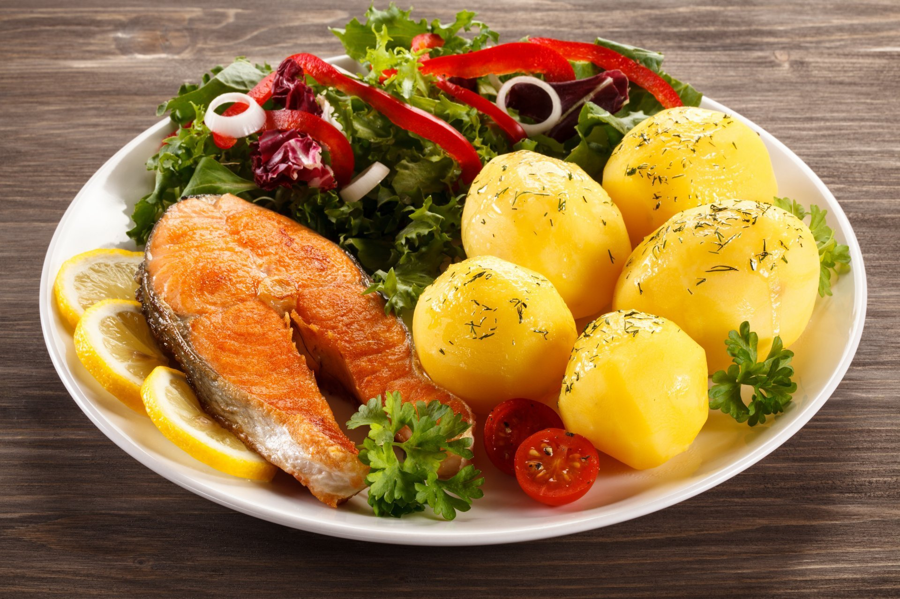
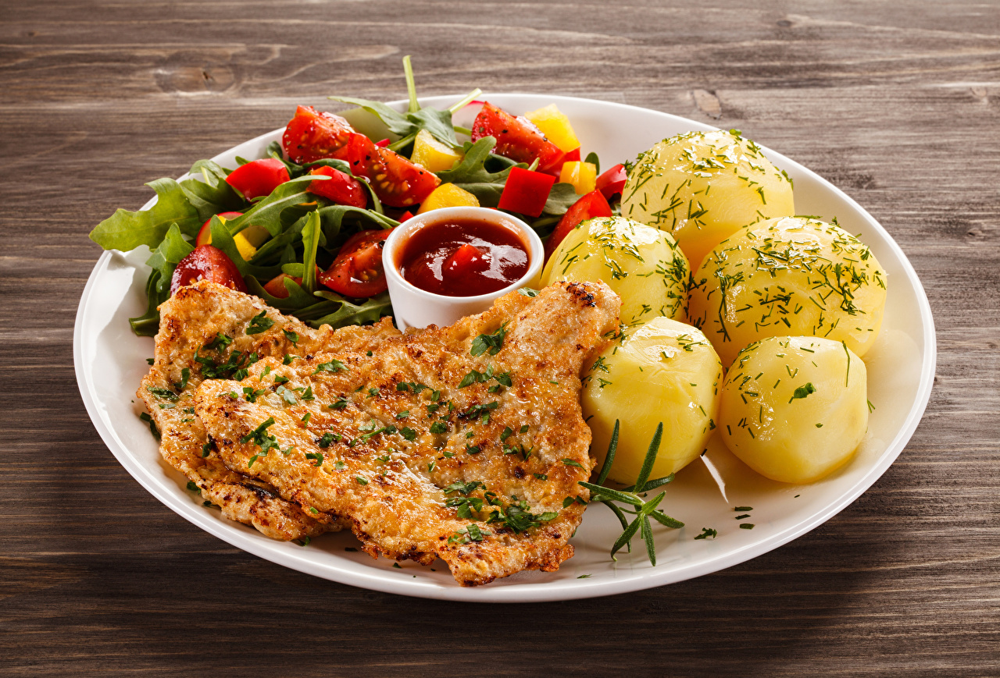
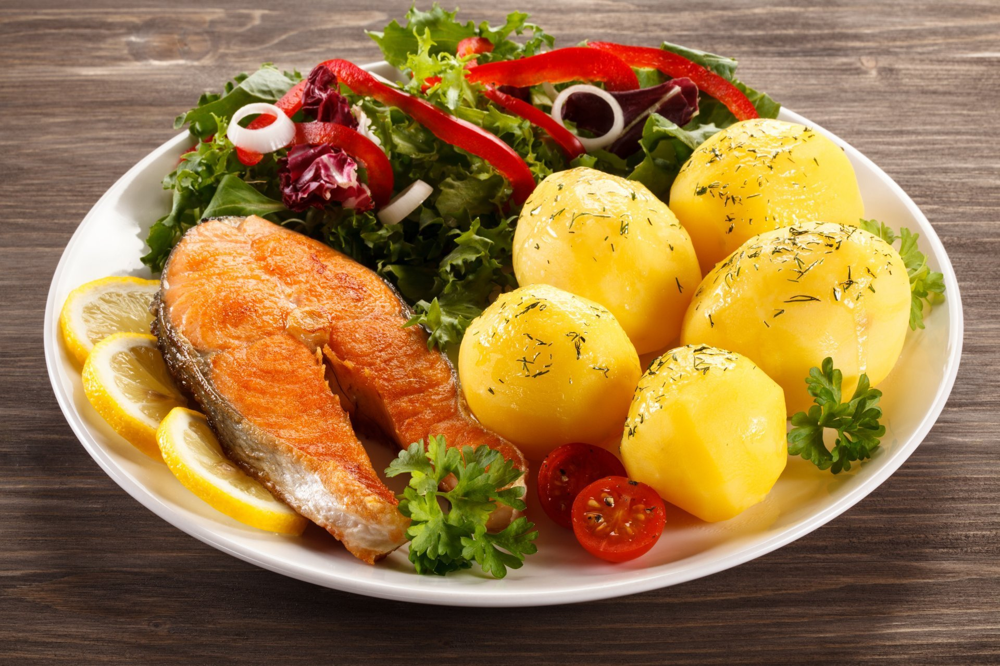
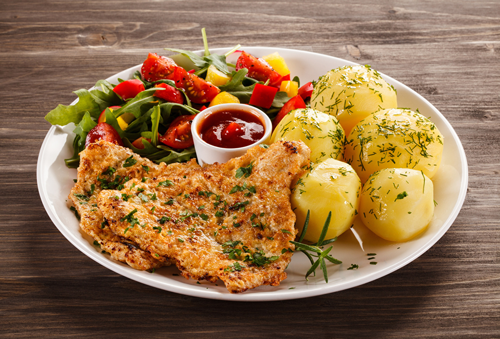
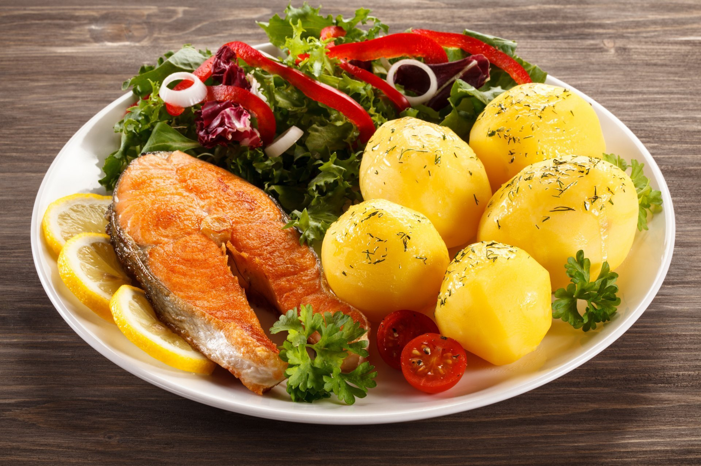

Бон!!Изысканный,Восточный вкус!! от профессионального ШЕФ Повара JABRAN
AKTAN from KYRGYZ REPUBLIC
Попробуйте вкус стейка не выходя из дома :Принимаем онлайн заказы
тел:0(705)190945 , доставка заказа за 59 минут или-
бесплатно
Зима!! На улице стужа а в ресторане Вас ждет горячий стейк из
фемерской говядины на углях, румяный картофель с золотистой
корочкой и изящный ,вкусный
салат из креветок.Запах нежного, сочного мясо с дымком будет отлично
сочетаться с хрустяшим картофелем


"Javhars Steak" "У нас радостная новость!
Мы представляем вам наше обновленное меню с новыми
блюдами и вкусными напитками. Отведайте нашу эксклюзивную коллекцию,
которая приготовлена с использованием свежих и качественных
ингредиентов.
Приходите и погрузитесь в мир новых гастрономических впечатлений!"


 


